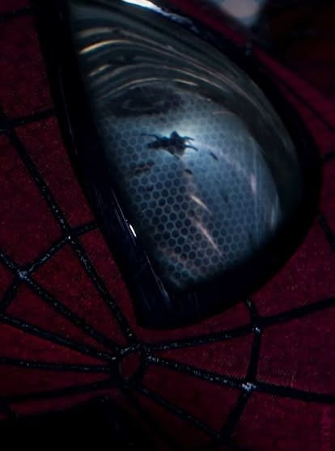

The Amazing Spider-Man (2012)
Discovering His Identity
After getting bitten by a radioactive spider, Peter suddenly gains spider-like abilities he doesn’t
fully understand. He struggles to figure out what he should do with these powers and whether he
deserves them or not. This is where his journey as a Friendly Neighborhood Spider-Man begins.
Uncle Ben's Death
After the death of Uncle Ben, Peter blames himself and becomes obsessed with tracking down the man
responsible. This guilt drives him into dangerous situations and clouds his judgment. The weight of
his emotions becomes one of the major struggles of his early life as Spider-Man.
Balancing School, Family, and Hero Life
While being the Friendly Neighborhood Spider-Man, Peter still has to deal with schoolwork, bullies,
relationships, and helping Aunt May at home. After Uncle Ben’s death, he takes on even more
responsibilities. His double life starts to wear him down, and he learns that being a hero means
sacrificing things for the greater good.
The Amazing Spider-Man 2 (2014)
Keeping Gwen Safe
One of Peter's biggest emotional conflicts is choosing between being with Gwen or staying away from
her because of the danger that being Spider-Man brings. Every time he gets close to her, he
remembers the promise he made to her father and sometimes hallucinates, and the guilt weighs heavily
on him. This struggle affects every decision he makes that involves Gwen.
Helping Harry Osborn While Fighting Green Goblin
After Harry's return, Peter's childhood friend, Harry has a deadly inherited disease and begs Peter
to help him meet Spider-Man. After meeting Spider-Man, he despirately asks for Spider-Man's blood,
but as
Spider-Man worries that giving his blood, might worsen Harry's condition and he might die, he
declined. When Harry
transforms into the Green Goblin, Peter struggles to fight him because he still believes that his
best friend is still
there.
Losing Gwen
When Gwen dies during the battle with the Green Goblin, Peter is devastated and reaches his lowest
point. He withdraws from being the friendly neighborhood Spider-Man and struggles to move forward
without her. This becomes the hardest emotional challenge he has ever faced as both a hero and as
Peter Parker.